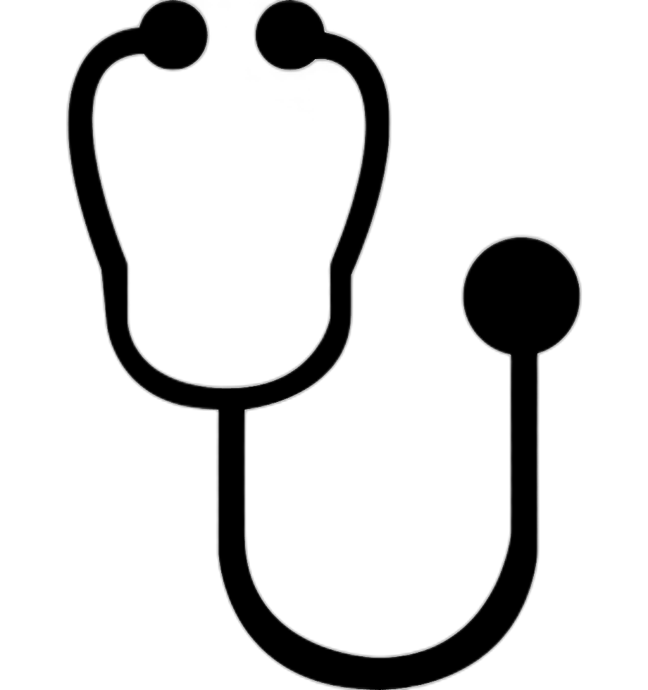

Lifestyle
Lifestyle
Bagian Lifestyle memuat artikel mengenai gaya hidup, hobi berkebun dan merawat tanaman hias yang memiliki banyak manfaat serta beberapa jenis tanaman hias cantik dan unik yang cocok ditanam di rumah.
 Health
Selanjutya bagian health memuat artikel bertema kesehatan yaitu pola makan yang dianjurkan demi menjaga kesehatan, serta penjelasan mengenai apa itu yang dimaksut dengan 4 sehat 5 sempurna.
About
Bagian about berisikan biodata pribadi author, dan juga form untuk menyampaikan kritik dan saran untuk author mengenai blog pribadi misalkan ada kesalahan penulisan, penggunaan EYD yang kurang tepat dan sebagainya.